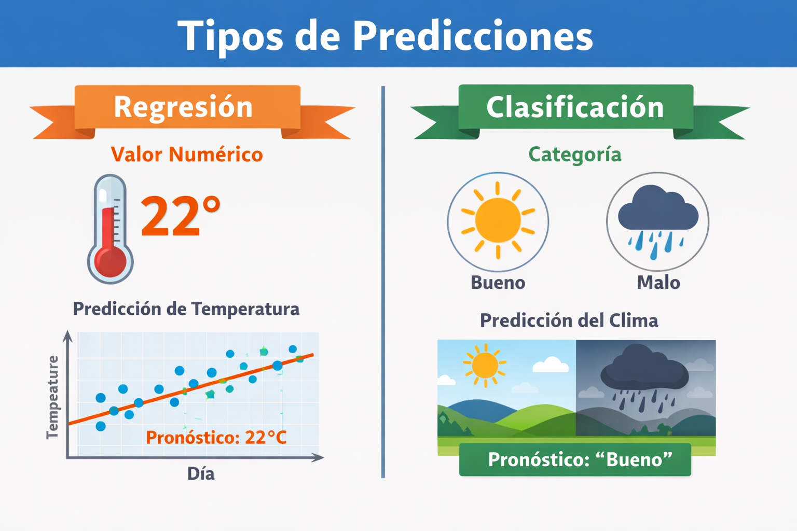

🔮 El problema de la predicción
Comprender el problema de la predicción es el primer paso para entender cualquier funcionalidad de software basada en inteligencia artificial, incluida la clasificación de imágenes. Antes de hablar de modelos, librerías o implementación, es fundamental aclarar qué significa que un sistema “prediga” algo.
En el contexto del software, una predicción puede entenderse como:
- Un resultado producido por el sistema a partir de datos de entrada
- Un resultado basado en patrones aprendidos previamente
- Una estimación, no una certeza absoluta
El sistema no razona ni interpreta el mundo como una persona. Su comportamiento se limita a procesar datos y generar una salida siguiendo relaciones establecidas a partir de datos anteriores.
Esta idea suele ser difícil de comprender al comienzo, porque tendemos a atribuirle al sistema una forma de razonamiento similar a la humana. Una analogía útil es pensar en una persona que aprende por repetición, no por comprensión explícita.
Por ejemplo, imagina a alguien que nunca ha estudiado meteorología, pero que durante años ha observado el clima todos los días. Esa persona no sabe explicar científicamente por qué llueve ni cómo funcionan los fenómenos atmoséricos, pero después de ver muchas veces el cielo, la temperatura y el viento, es capaz de decir “hoy probablemente va a llover”. Esa predicción no se basa en entender el fenómeno, sino en reconocer patrones que ha visto antes.
Un sistema de software basado en inteligencia artificial funciona de manera muy similar. No entiende qué es la lluvia, el calor o el buen tiempo. Lo único que hace es observar datos, identificar regularidades y, cuando recibe un nuevo conjunto de datos, producir un resultado que se parece a los casos anteriores. La predicción es, por tanto, una respuesta basada en experiencia acumulada, no en comprensión del mundo.
Esta analogía ayuda a aclarar por qué una predicción no es una certeza y por qué el sistema puede equivocarse incluso cuando “parece” estar seguro. El sistema no razona ni explica; simplemente elige la salida que más se parece a lo que ha visto antes.
A partir de esta definición general, es importante entender que existen dos tipos básicos de predicciones que aparecen de forma recurrente en sistemas de software:
- Regresión
- Clasificación
Distinguir entre ambos tipos es clave para entender qué tipo de problema resuelve la clasificación de imágenes.
📈 Regresión y clasificación
La siguiente figura ilustra la diferencia entre ambos tipos de predicción utilizando los ejemplos discutidos en el texto.

La regresión corresponde a predicciones cuyo resultado es un valor numérico continuo. Un ejemplo clásico es la predicción de temperatura.
La siguiente tabla muestra un conjunto simplificado de datos de entrada y el valor que se desea predecir:
| Día | Temperatura mañana (°C) | Humedad (%) | Nubosidad | Temperatura tarde (°C) |
|---|---|---|---|---|
| 1 | 14.0 | 80 | Alta | 18.5 |
| 2 | 16.5 | 65 | Media | 22.0 |
| 3 | 18.0 | 55 | Baja | 25.3 |
En este caso:
- Las columnas de la izquierda corresponden a datos de entrada
- La última columna es el valor numérico que se quiere predecir
- El resultado es un número continuo dentro de un rango posible
El número exacto puede variar, pero siempre representa una magnitud medible.
La clasificación, en cambio, corresponde a predicciones cuyo resultado es una categoría. Un ejemplo simple es la predicción del estado del tiempo en términos como “bueno” o “malo”.
La siguiente tabla ilustra este tipo de problema:
| Día | Temperatura (°C) | Humedad (%) | Viento | Estado del tiempo |
|---|---|---|---|---|
| 1 | 18 | 70 | Bajo | Bueno |
| 2 | 15 | 85 | Alto | Malo |
| 3 | 22 | 60 | Bajo | Bueno |
En este caso:
- Los datos de entrada siguen siendo valores medibles
- La salida no es un número
- El sistema debe elegir una clase entre un conjunto finito de opciones
Esta distinción es fundamental, porque la clasificación de imágenes pertenece claramente a este segundo tipo. Cuando un sistema clasifica una imagen:
- No mide algo continuo
- No produce un valor numérico como salida principal
- Decide a qué clase pertenece la imagen
Por ejemplo, una tabla conceptual para clasificación de imágenes podría verse así:
| Imagen | Características extraídas | Clase asignada |
|---|---|---|
| Imagen 1 | Bordes, colores, formas | Gato |
| Imagen 2 | Bordes, texturas | Perro |
| Imagen 3 | Sombras, contornos | Ave |
Otro aspecto importante es entender que, tanto en regresión como en clasificación, una predicción no es una verdad absoluta. El sistema no “sabe” cuál es la respuesta correcta. Lo que hace es:
- Estimar el resultado más probable
- Basarse en los datos disponibles
- Utilizar patrones aprendidos previamente
Por esta razón, una predicción siempre puede ser incorrecta.
Este punto es especialmente relevante cuando se trabaja con imágenes. Para una persona, una imagen puede representar claramente un objeto o una situación. Para el computador, en cambio:
- Una imagen es solo un conjunto de datos numéricos
- No existe una comprensión visual en el sentido humano
- La predicción se basa en similitudes con ejemplos vistos anteriormente
En esta parte de la sesión, el objetivo es que los estudiantes comprendan que la predicción es el problema central que se intenta resolver, y que existen distintos tipos de predicción con objetivos distintos. La clasificación de imágenes es un caso particular de predicción por clasificación, y entender esta diferencia es esencial antes de avanzar hacia la implementación de un clasificador.
Esta comprensión servirá como base directa para la siguiente parte, donde se abordará qué significa implementar un clasificador como una funcionalidad concreta dentro de un sistema de software.